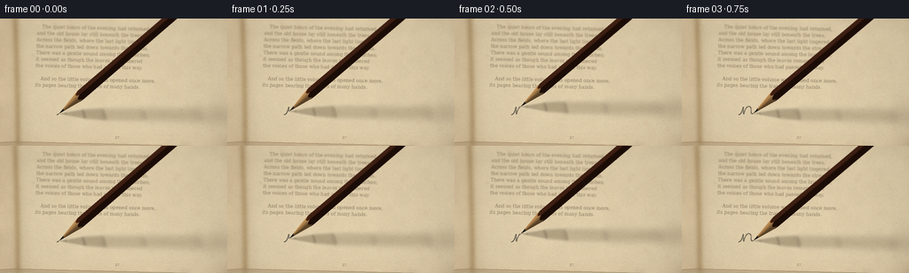
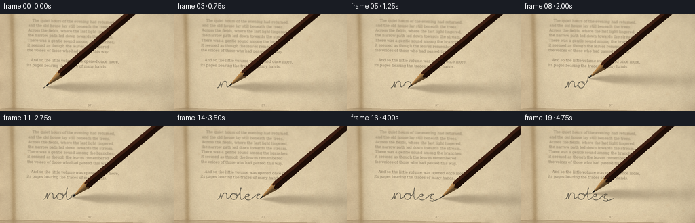
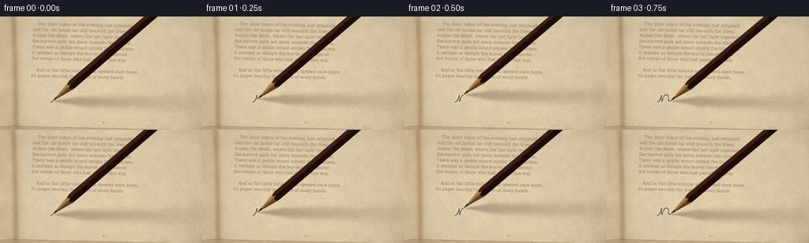

CODING AGENTS AS PIXEL WORLD MODELS
traex/GPT-6.1-Sol · mechanics_0049
点击播放 · 原生 RGB 像素
此结果可播放，但该运行尚未通过最终提交审核。页面展示不代表评测通过。
逐轮保存的候选
回放视频、检查图与代码变化。
每份候选均可单独播放。实际图片检查记录在下方工具轨迹中。
候选 01播放与检查图
点击播放 · 原生 RGB 像素


展开代码变化
--- 上一保存版本
+++ 本次保存版本
@@ -0,0 +1,291 @@
+from pathlib import Path
+import numpy as np
+from PIL import Image, ImageDraw, ImageFont, ImageFilter
+import artifact_io
+
+ROOT=Path(__file__).resolve().parent
+W,H,S=256,144,3
+WW,HH=W*S,H*S
+rng=np.random.default_rng(14049)
+Y,X=np.mgrid[0:HH,0:WW].astype(float)/S
+
+def noise_blur(r, seed):
+ rgen=np.random.default_rng(seed)
+ arr=np.uint8(rgen.uniform(0,255,(HH,WW)))
+ im=Image.fromarray(arr).filter(ImageFilter.GaussianBlur(r*S))
+ out=np.asarray(im).astype(float)
+ return (out-out.mean())/(out.std()+1e-5)
+
+# Persistent, fibrous antique rag paper. All detail is world-locked.
+fine=rng.normal(0,1,(HH,WW))
+mid=noise_blur(.38,5)
+coarse=noise_blur(3.8,6)
+broad=noise_blur(13,7)
+light=7*np.exp(-((X-113)/130)**2-((Y-94)/100)**2)
+tex=1.1*fine+1.45*mid+1.1*coarse+1.2*broad
+paper=np.stack([217+light+tex,199+light+tex,164+light+tex*.88],axis=-1)
+# Curved gutter and warm, aged margins.
+gutter_x=17+3*np.sin(Y/90)
+gutter=34*np.exp(-((X-gutter_x)/3.7)**2)+10*np.exp(-((X-gutter_x)/10)**2)
+paper-=gutter[...,None]*np.array([.8,.94,1.05])
+edge=np.maximum(0,(25-X)/25)*9+np.maximum(0,(Y-127)/17)*5
+paper-=edge[...,None]*np.array([.4,.9,1.1])
+for j in range(52):
+ cx=rng.uniform(20,267);cy=rng.uniform(-10,147)
+ if 44<cx<200 and 78<cy<123: continue
+ r=rng.uniform(.6,3.3)
+ a=rng.uniform(2,11)
+ spot=np.exp(-((X-cx)**2/(r*r)+(Y-cy)**2/(r*r*.6)))
+ paper-=spot[...,None]*np.array([a*.45,a*.85,a])
+paper=np.clip(paper,0,255).astype(np.uint8)
+bg=Image.fromarray(paper)
+# Small embedded fibers and irregular pores.
+fib=Image.new('RGBA',(WW,HH),(0,0,0,0));d=ImageDraw.Draw(fib)
+for i in range(5500):
+ xx=rng.uniform(20,260)*S; yy=rng.uniform(0,145)*S
+ ll=rng.uniform(.25,1.9)*S; angle=rng.normal(-.1,.5)
+ col=(112,91,57,int(rng.uniform(5,28))) if i%3 else (255,245,216,int(rng.uniform(10,55)))
+ d.line((xx,yy,xx+ll*np.cos(angle),yy+ll*np.sin(angle)),fill=col,width=1)
+bg=Image.alpha_composite(bg.convert('RGBA'),fib)
+# Book typography, not notebook ruling. Faded letterpress ink.
+ink=Image.new('L',(WW,HH),0);di=ImageDraw.Draw(ink)
+fontpath='/usr/share/fonts/truetype/dejavu/DejaVuSerif.ttf'
+font=ImageFont.truetype(fontpath,16)
+small=ImageFont.truetype(fontpath,13)
+lines=[
+ 'The quiet hours of the evening had returned,',
+ 'and the old house lay still beneath the trees.',
+ 'Across the fields, where the last light lingered,',
+ 'the narrow path led down towards the stream.',
+ 'There was a gentle sound among the branches;',
+ 'it seemed as though the leaves remembered',
+ 'the voices of those who had passed this way.',
+ '',
+ 'And so the little volume was opened once more,',
+ 'its pages bearing the traces of many hands.'
+]
+for i,txt in enumerate(lines):
+ xx=40+(6 if i in (0,8) else 0); yy=8+i*7.35
+ di.text((xx*S,yy*S),txt,font=font,fill=166)
+di.text((132*S,132*S),'37',font=small,fill=160)
+# Make letters follow a slight book-page skew and expose imperfect ink transfer.
+ink=ink.transform((WW,HH),Image.Transform.AFFINE,(1,.035,-2*S,-.023,1,3*S),Image.Resampling.BICUBIC)
+imask=np.asarray(ink).astype(float)/255
+imask*=np.clip(.86+.10*mid+.07*fine,.28,1.0)
+arr=np.asarray(bg.convert('RGB')).astype(float)
+inkcol=np.array([87.,73.,52.])
+arr=arr*(1-imask[...,None])+inkcol*imask[...,None]
+# The left page and lower block of layered paper provide the book's physical edge.
+bg=Image.fromarray(np.uint8(np.clip(arr,0,255)))
+d=ImageDraw.Draw(bg)
+for j in range(9):
+ y=140+j*.61
+ col=(164+j*3,140+j*3,104+j*3)
+ d.line([(0,int(y*S)),(16*S,int((y-1)*S)),(WW,int((y+5)*S))],fill=col,width=max(1,int(.34*S)))
+# Optical focus lies on the writing plane; distant print is gently softened.
+raw=np.asarray(bg).astype(float)
+soft=np.asarray(bg.filter(ImageFilter.GaussianBlur(.6*S))).astype(float)
+foc=np.clip((77-Y)/65,0,1)*.8
+raw=raw*(1-foc[...,None])+soft*foc[...,None]
+base=raw
+
+# Parametric cursive pen path: a single flowing word, followed by the t crossbar.
+def bezier(p0,p1,p2,p3,n=35):
+ t=np.linspace(0,1,n)[:,None]
+ return (1-t)**3*np.array(p0)+3*(1-t)**2*t*np.array(p1)+3*(1-t)*t*t*np.array(p2)+t**3*np.array(p3)
+segments=[
+ ((0,1),(3,0),(4,-3),(5,-7)),
+ ((5,-7),(6,-11),(5,0),(6,0)),
+ ((6,0),(8,-9),(12,-11),(14,-7)),
+ ((14,-7),(15,-4),(12,3),(19,-3)),
+ ((19,-3),(20,-9),(28,-11),(29,-6)),
+ ((29,-6),(31,1),(19,4),(20,-5)),
+ ((20,-5),(21,-9),(26,-9),(29,-5)),
+ ((29,-5),(32,-3),(36,-18),(35,-17)),
+ ((35,-17),(34,-17),(32,3),(37,0)),
+ ((37,0),(39,-1),(40,-3),(42,-4)),
+ ((42,-4),(51,-5),(47,-10),(43,-7)),
+ ((43,-7),(37,0),(47,4),(53,-3)),
+ ((53,-3),(55,-5),(60,-10),(63,-8)),
+ ((63,-8),(60,-7),(56,-4),(59,-2)),
+ ((59,-2),(68,0),(62,5),(57,1)),
+ ((57,1),(62,3),(67,0),(72,-2))]
+path=np.concatenate([bezier(*seg) for seg in segments])
+path[:,0]+=64
+path[:,1]+=108
+# Slightly sloping, individual pencil lettering.
+path[:,1]+=.025*(path[:,0]-64)
+dist=np.r_[0,np.cumsum(np.sqrt(np.sum(np.diff(path,axis=0)**2,axis=1)))]
+# Uniform arclength motion along the line.
+def pos_at(frac):
+ v=frac*dist[-1]
+ return np.array([np.interp(v,dist,path[:,i]) for i in (0,1)])
+
+# Camera rays for an actual geometric hexagonal lacquered pencil and sharpened cone.
+K=.64
+cam=np.array([0.,-K,-1.])
+orig=np.stack([X,Y+K*250,np.full_like(X,250)],axis=-1)
+L=np.array([-.55,-.48,.83]);L/=np.linalg.norm(L)
+view=-cam/np.linalg.norm(cam)
+R=5.6
+ap=R*np.cos(np.pi/6)
+alpha=R/32.5
+
+def pencil_layer(tip,phase,lift=0):
+ # Tiny barrel rotation while the graphite moves over paper.
+ axis=np.array([.77+.013*np.sin(phase),-.31+.019*np.sin(phase*.7),.556])
+ axis/=np.linalg.norm(axis)
+ U=np.cross(axis,np.array([0.,0.,1.]));U/=np.linalg.norm(U)
+ V=np.cross(axis,U)
+ roll=.14+phase*.013
+ U,V=U*np.cos(roll)+V*np.sin(roll),-U*np.sin(roll)+V*np.cos(roll)
+ p0=np.array([tip[0],tip[1]+K*lift,lift+.12])
+ off=orig-p0
+ a=off@axis;b=off@U;c=off@V
+ da=cam@axis;db=cam@U;dc=cam@V
+ # Clip the camera ray against six faces and both end planes.
+ near=np.full(X.shape,-1e6);far=np.full(X.shape,1e6)
+ faces=np.full(X.shape,-1,dtype=np.int8)
+ normals=[]
+ for j in range(6):
+ th=np.pi/6+j*np.pi/3
+ n=U*np.cos(th)+V*np.sin(th);normals.append(n)
+ den=cam@n;num=ap-(off@n)
+ tt=num/den
+ if den<0:
+ upd=tt>near;near=np.maximum(near,tt);faces[upd]=j
+ else:far=np.minimum(far,tt)
+ # Clip axial ends.
+ tt=-a/da
+ if da<0:far=np.minimum(far,tt)
+ else:near=np.maximum(near,tt)
+ tt=(260-a)/da
+ if da<0:near=np.maximum(near,tt)
+ else:far=np.minimum(far,tt)
+ # Intersect the conical sharpening surface with the hexagonal barrel.
+ AA=db*db+dc*dc-alpha*alpha*da*da
+ BB=2*(b*db+c*dc-alpha*alpha*a*da)
+ CC=b*b+c*c-alpha*alpha*a*a
+ disc=BB*BB-4*AA*CC
+ sq=np.sqrt(np.maximum(disc,0))
+ tc=(-BB-sq)/(2*AA);tf=(-BB+sq)/(2*AA)
+ conehit=tc>near
+ hit=np.maximum(tc,near)
+ far=np.minimum(tf,far)
+ mask=(disc>=0)&(hit<=far)&(hit>0)
+ la=a+hit*da;u=b+hit*db;v=c+hit*dc
+ la=np.where(mask,la,0);u=np.where(mask,u,0);v=np.where(mask,v,0)
+ nn=np.asarray(normals)[np.maximum(0,faces)]
+ nc=u[...,None]*U+v[...,None]*V-(alpha*alpha*la)[...,None]*axis
+ nc/=np.maximum(np.linalg.norm(nc,axis=-1,keepdims=True),1e-8)
+ n=np.where(conehit[...,None],nc,nn)
+ theta=np.arctan2(v,u)
+ diffuse=np.maximum(0,n@L)
+ halfv=(L+view);halfv/=np.linalg.norm(halfv)
+ spec=np.maximum(0,n@halfv)**65
+ # Deep reddish-brown wood-cased pencil with narrow lacquer highlights.
+ grain=.9*np.sin(theta*53+np.sin(la*.023)*2)+.4*np.sin(theta*109+la*.12)
+ brown=np.empty((*X.shape,3));brown[:]=[58,28,16]
+ brown+=grain[...,None]*np.array([2.5,1.4,.6])
+ brown*= (.46+.65*diffuse)[...,None]
+ brown+=spec[...,None]*np.array([70,58,45])
+ # Quiet longitudinal seams on the lacquered hexagonal facets.
+ facet_angle=np.mod(theta-np.pi/6,np.pi/3)
+ seam=np.exp(-((facet_angle-.018)/.020)**2)
+ brown+=seam[...,None]*np.array([7.,4.,2.])
+ # Exposed cedar shows lengthwise fibers and subtle sharpening-tool rings.
+ woodgrain=np.sin(theta*31+la*.10)+.48*np.sin(theta*74-la*.17)
+ wood=np.empty((*X.shape,3));wood[:]=[187,139,82]
+ wood+=woodgrain[...,None]*np.array([10,8,5])
+ wood+=np.sin(la*3.9+theta*.5)[...,None]*np.array([1.6,1.2,.6])
+ wood*= (.48+.60*diffuse)[...,None]
+ wood+=np.maximum(0,n@halfv)[...,None]**26*np.array([13,11,7])
+ # Slight irregularity where the black graphite core emerges from the cedar.
+ lead=la<(7.2+.45*np.sin(theta*3))
+ leadcol=np.empty((*X.shape,3));leadcol[:]=[39,38,34]
+ leadcol*= (.50+.53*diffuse)[...,None]
+ leadcol+=np.maximum(0,n@halfv)[...,None]**30*np.array([41,40,37])
+ col=np.where(conehit[...,None],wood,brown)
+ col=np.where((lead&conehit)[...,None],leadcol,col)
+ # Tiny scratch glints on the upper-facing lacquer face.
+ scratch=(np.sin(theta*99+la*.016)>.995)&(np.mod(la,58)<32)&(~conehit)
+ col+=scratch[...,None]*np.array([8,6,3])
+ rgba=np.zeros((HH,WW,4),np.uint8)
+ rgba[:,:,:3]=np.uint8(np.clip(col,0,255));rgba[:,:,3]=mask.astype(np.uint8)*255
+ layer=Image.fromarray(rgba)
+ # Upper shaft is farther from the macro focal plane than the tip.
+ blurred=layer.filter(ImageFilter.GaussianBlur(.42*S))
+ mix=np.clip((la-38)/100,0,1)*.86
+ layer=Image.fromarray(np.uint8(np.asarray(layer)*(1-mix[...,None])+np.asarray(blurred)*mix[...,None]))
+ return layer,axis,U,V,p0
+
+def shadow_layer(axis,U,V,p0):
+ sh=Image.new('RGBA',(WW,HH),(0,0,0,0))
+ for l0,l1 in [(140,260),(85,140),(45,85),(25,45),(7,25),(0,7)]:
+ poly=[]
+ for ll in (l0,l1):
+ rad=min(R,alpha*ll)
+ for th in np.linspace(0,2*np.pi,12,endpoint=False):
+ p=p0+ll*axis+rad*(U*np.cos(th)+V*np.sin(th))
+ pp=p[:2]-p[2]*L[:2]/L[2]
+ poly.append(tuple(pp*S))
+ # Convex hull using an elementary monotone chain.
+ pts=sorted(poly)
+ def cross(o,a,b):return (a[0]-o[0])*(b[1]-o[1])-(a[1]-o[1])*(b[0]-o[0])
+ low=[];high=[]
+ for p in pts:
+ while len(low)>=2 and cross(low[-2],low[-1],p)<=0:low.pop()
+ low.append(p)
+ for p in reversed(pts):
+ while len(high)>=2 and cross(high[-2],high[-1],p)<=0:high.pop()
+ high.append(p)
+ chunk=Image.new('RGBA',(WW,HH),(0,0,0,0))
+ ImageDraw.Draw(chunk).polygon(low[:-1]+high[:-1],fill=(54,38,18,70 if l0<45 else 46))
+ chunk=chunk.filter(ImageFilter.GaussianBlur(S*(.35+axis[2]*(l0+l1)/2*.052+p0[2]*.08)))
+ sh=Image.alpha_composite(sh,chunk)
+ return sh
+
+frames=[]
+mark=Image.new('L',(WW,HH),0)
+lastfrac=0
+for f in range(20):
+ lift=0
+ if f<=16:
+ frac=(f+.20)/16.20
+ frac=min(1,frac)
+ tip=pos_at(frac)
+ # Deposit persistent graphite exactly along the moving contact point.
+ part=path[(dist>=lastfrac*dist[-1])&(dist<=frac*dist[-1])]
+ pprev=pos_at(lastfrac)
+ coords=np.vstack([pprev,part,tip])*S
+ dr=ImageDraw.Draw(mark)
+ # Hairline grainy strokes, rather than a uniform digital pen.
+ dr.line([tuple(p) for p in coords],fill=197,width=3,joint='curve')
+ lastfrac=frac
+ elif f==17:
+ tip=pos_at(1)*.45+np.array([94,100])*.55
+ lift=4
+ elif f==18:
+ tip=np.array([94.,101.5])
+ dr=ImageDraw.Draw(mark);dr.line([(92*S,102*S),(94*S,101.5*S)],fill=187,width=3)
+ else:
+ tip=np.array([103.,100.5])
+ dr=ImageDraw.Draw(mark);dr.line([(94*S,101.5*S),(103*S,100.5*S)],fill=187,width=3)
+ m=np.asarray(mark).astype(float)/255
+ # Rough paper causes broken, matte graphite coverage and faint rubbed edges.
+ coverage=m*np.clip(.89+.18*mid+.13*fine,.25,1)
+ haze=np.asarray(mark.filter(ImageFilter.GaussianBlur(.42*S))).astype(float)/255*.065
+ coverage=np.maximum(coverage,haze)
+ graphite=np.array([59.,56.,49.])
+ rgb=base*(1-coverage[...,None])+graphite*coverage[...,None]
+ scene=Image.fromarray(np.uint8(np.clip(rgb,0,255))).convert('RGBA')
+ pen,axis,U,V,p0=pencil_layer(tip,f*.23,lift)
+ scene=Image.alpha_composite(scene,shadow_layer(axis,U,V,p0))
+ scene=Image.alpha_composite(scene,pen)
+ arr=np.asarray(scene.convert('RGB')).astype(float)
+ vignette=1-.095*((X-130)/185)**2-.050*((Y-78)/120)**2
+ arr*=vignette[...,None]
+ final=Image.fromarray(np.uint8(np.clip(arr,0,255))).resize((W,H),Image.Resampling.LANCZOS)
+ frames.append(np.asarray(final))
+artifact_io.save(np.stack(frames),ROOT)
+print('Saved',len(frames),'RGB frames.')
候选 02播放与检查图
点击播放 · 原生 RGB 像素


展开代码变化
--- 上一保存版本
+++ 本次保存版本
@@ -22,7 +22,7 @@
coarse=noise_blur(3.8,6)
broad=noise_blur(13,7)
light=7*np.exp(-((X-113)/130)**2-((Y-94)/100)**2)
-tex=1.1*fine+1.45*mid+1.1*coarse+1.2*broad
+tex=1.35*fine+2.25*mid+1.7*coarse+1.2*broad
paper=np.stack([217+light+tex,199+light+tex,164+light+tex*.88],axis=-1)
# Curved gutter and warm, aged margins.
gutter_x=17+3*np.sin(Y/90)
@@ -220,30 +220,40 @@
return layer,axis,U,V,p0
def shadow_layer(axis,U,V,p0):
- sh=Image.new('RGBA',(WW,HH),(0,0,0,0))
- for l0,l1 in [(140,260),(85,140),(45,85),(25,45),(7,25),(0,7)]:
- poly=[]
- for ll in (l0,l1):
- rad=min(R,alpha*ll)
- for th in np.linspace(0,2*np.pi,12,endpoint=False):
- p=p0+ll*axis+rad*(U*np.cos(th)+V*np.sin(th))
- pp=p[:2]-p[2]*L[:2]/L[2]
- poly.append(tuple(pp*S))
- # Convex hull using an elementary monotone chain.
- pts=sorted(poly)
- def cross(o,a,b):return (a[0]-o[0])*(b[1]-o[1])-(a[1]-o[1])*(b[0]-o[0])
- low=[];high=[]
- for p in pts:
- while len(low)>=2 and cross(low[-2],low[-1],p)<=0:low.pop()
- low.append(p)
- for p in reversed(pts):
- while len(high)>=2 and cross(high[-2],high[-1],p)<=0:high.pop()
- high.append(p)
- chunk=Image.new('RGBA',(WW,HH),(0,0,0,0))
- ImageDraw.Draw(chunk).polygon(low[:-1]+high[:-1],fill=(54,38,18,70 if l0<45 else 46))
- chunk=chunk.filter(ImageFilter.GaussianBlur(S*(.35+axis[2]*(l0+l1)/2*.052+p0[2]*.08)))
- sh=Image.alpha_composite(sh,chunk)
- return sh
+ # One continuous cast silhouette, with increasing optical penumbra.
+ poly=[]
+ for ll in (0,7,25,32.5,260):
+ rad=min(R,(R/32.5)*ll)
+ for th in np.linspace(0,2*np.pi,18,endpoint=False):
+ p=p0+ll*axis+rad*(U*np.cos(th)+V*np.sin(th))
+ pp=p[:2]-p[2]*L[:2]/L[2]
+ poly.append(tuple(pp*S))
+ pts=sorted(poly)
+ def cross(o,a,b):return (a[0]-o[0])*(b[1]-o[1])-(a[1]-o[1])*(b[0]-o[0])
+ low=[];high=[]
+ for p in pts:
+ while len(low)>=2 and cross(low[-2],low[-1],p)<=0:low.pop()
+ low.append(p)
+ for p in reversed(pts):
+ while len(high)>=2 and cross(high[-2],high[-1],p)<=0:high.pop()
+ high.append(p)
+ mask=Image.new('L',(WW,HH),0)
+ ImageDraw.Draw(mask).polygon(low[:-1]+high[:-1],fill=255)
+ ground=p0[:2]-p0[2]*L[:2]/L[2]
+ cast=axis[:2]-axis[2]*L[:2]/L[2]
+ length=((X-ground[0])*cast[0]+(Y-ground[1])*cast[1])/(cast@cast)
+ blur=np.clip((.48+np.maximum(length,0)*.048+p0[2]*.15),.48,8.0)
+ radii=[.48,1.3,2.8,5.2,8.0]
+ alphas=[np.asarray(mask.filter(ImageFilter.GaussianBlur(r*S))).astype(float)/255 for r in radii]
+ alpha=np.zeros(X.shape)
+ for i in range(4):
+ t=np.clip((blur-radii[i])/(radii[i+1]-radii[i]),0,1)
+ use=(blur>=radii[i])&(blur<=radii[i+1])
+ alpha+=use*(alphas[i]*(1-t)+alphas[i+1]*t)
+ alpha*=.30*np.exp(-np.maximum(length,0)/260)
+ sh=np.zeros((HH,WW,4),np.uint8)
+ sh[:,:,:3]=[50,35,18];sh[:,:,3]=np.uint8(np.clip(alpha*255,0,255))
+ return Image.fromarray(sh)
frames=[]
mark=Image.new('L',(WW,HH),0)
可观测工具轨迹
实际执行的命令与返回图片。
命令 1exit 0
/bin/bash -lc 'ls -la && cat prompt.txt && cat GENERATION_RULES.md && cat task_spec.json'
命令 2exit 0
/bin/bash -lc 'cat artifact_io.py && fc-list | head -20'
命令 3exit 0
/bin/bash -lc "cat > generate.py <<'PY'
from pathlib import Path
import numpy as np
from PIL import Image, ImageDraw, ImageFont, ImageFilter
import artifact_io
ROOT=Path(__file__).resolve().parent
W,H,S=256,144,3
WW,HH=W*S,H*S
rng=np.random.default_rng(14049)
Y,X=np.mgrid[0:HH,0:WW].astype(float)/S
def noise_blur(r, seed):
rgen=np.random.default_rng(seed)
arr=np.uint8(rgen.uniform(0,255,(HH,WW)))
im=Image.fromarray(arr).filter(ImageFilter.GaussianBlur(r*S))
out=np.asarray(im).astype(float)
return (out-out.mean())/(out.std()+1e-5)
# Persistent, fibrous antique rag paper. All detail is world-locked.
fine=rng.normal(0,1,(HH,WW))
mid=noise_blur(.38,5)
coarse=noise_blur(3.8,6)
broad=noise_blur(13,7)
light=7*np.exp(-((X-113)/130)**2-((Y-94)/100)**2)
tex=1.1*fine+1.45*mid+1.1*coarse+1.2*broad
paper=np.stack([217+light+tex,199+light+tex,164+light+tex*.88],axis=-1)
# Curved gutter and warm, aged margins.
gutter_x=17+3*np.sin(Y/90)
gutter=34*np.exp(-((X-gutter_x)/3.7)**2)+10*np.exp(-((X-gutter_x)/10)**2)
paper-=gutter[...,None]*np.array([.8,.94,1.05])
edge=np.maximum(0,(25-X)/25)*9+np.maximum(0,(Y-127)/17)*5
paper-=edge[...,None]*np.array([.4,.9,1.1])
for j in range(52):
cx=rng.uniform(20,267);cy=rng.uniform(-10,147)
if 44<cx<200 and 78<cy<123: continue
r=rng.uniform(.6,3.3)
a=rng.uniform(2,11)
spot=np.exp(-((X-cx)**2/(r*r)+(Y-cy)**2/(r*r*.6)))
paper-=spot[...,None]*np.array([a*.45,a*.85,a])
paper=np.clip(paper,0,255).astype(np.uint8)
bg=Image.fromarray(paper)
# Small embedded fibers and irregular pores.
fib=Image.new('RGBA',(WW,HH),(0,0,0,0));d=ImageDraw.Draw(fib)
for i in range(5500):
xx=rng.uniform(20,260)*S; yy=rng.uniform(0,145)*S
ll=rng.uniform(.25,1.9)*S; angle=rng.normal(-.1,.5)
col=(112,91,57,int(rng.uniform(5,28))) if i%3 else (255,245,216,int(rng.uniform(10,55)))
d.line((xx,yy,xx+ll*np.cos(angle),yy+ll*np.sin(angle)),fill=col,width=1)
bg=Image.alpha_composite(bg.convert('RGBA'),fib)
# Book typography, not notebook ruling. Faded letterpress ink.
ink=Image.new('L',(WW,HH),0);di=ImageDraw.Draw(ink)
fontpath='/usr/share/fonts/truetype/dejavu/DejaVuSerif.ttf'
font=ImageFont.truetype(fontpath,16)
small=ImageFont.truetype(fontpath,13)
lines=[
'The quiet hours of the evening had returned,',
'and the old house lay still beneath the trees.',
'Across the fields, where the last light lingered,',
'the narrow path led down towards the stream.',
'There was a gentle sound among the branches;',
'it seemed as though the leaves remembered',
'the voices of those who had passed this way.',
'',
'And so the little volume was opened once more,',
'its pages bearing the traces of many hands.'
]
for i,txt in enumerate(lines):
xx=40+(6 if i in (0,8) else 0); yy=8+i*7.35
di.text((xx*S,yy*S),txt,font=font,fill=166)
di.text((132*S,132*S),'37',font=small,fill=160)
# Make letters follow a slight book-page skew and expose imperfect ink transfer.
ink=ink.transform((WW,HH),Image.Transform.AFFINE,(1,.035,-2*S,-.023,1,3*S),Image.Resampling.BICUBIC)
imask=np.asarray(ink).astype(float)/255
imask*=np.clip(.86+.10*mid+.07*fine,.28,1.0)
arr=np.asarray(bg.convert('RGB')).astype(float)
inkcol=np.array([87.,73.,52.])
arr=arr*(1-imask[...,None])+inkcol*imask[...,None]
# The left page and lower block of layered paper provide the book's physical edge.
bg=Image.fromarray(np.uint8(np.clip(arr,0,255)))
d=ImageDraw.Draw(bg)
for j in range(9):
y=140+j*.61
col=(164+j*3,140+j*3,104+j*3)
d.line([(0,int(y*S)),(16*S,int((y-1)*S)),(WW,int((y+5)*S))],fill=col,width=max(1,int(.34*S)))
# Optical focus lies on the writing plane; distant print is gently softened.
raw=np.asarray(bg).astype(float)
soft=np.asarray(bg.filter(ImageFilter.GaussianBlur(.6*S))).astype(float)
foc=np.clip((77-Y)/65,0,1)*.8
raw=raw*(1-foc[...,None])+soft*foc[...,None]
base=raw
# Parametric cursive pen path: a single flowing word, followed by the t crossbar.
def bezier(p0,p1,p2,p3,n=35):
t=np.linspace(0,1,n)[:,None]
return (1-t)**3*np.array(p0)+3*(1-t)**2*t*np.array(p1)+3*(1-t)*t*t*np.array(p2)+t**3*np.array(p3)
segments=[
((0,1),(3,0),(4,-3),(5,-7)),
((5,-7),(6,-11),(5,0),(6,0)),
((6,0),(8,-9),(12,-11),(14,-7)),
((14,-7),(15,-4),(12,3),(19,-3)),
((19,-3),(20,-9),(28,-11),(29,-6)),
((29,-6),(31,1),(19,4),(20,-5)),
((20,-5),(21,-9),(26,-9),(29,-5)),
((29,-5),(32,-3),(36,-18),(35,-17)),
((35,-17),(34,-17),(32,3),(37,0)),
((37,0),(39,-1),(40,-3),(42,-4)),
((42,-4),(51,-5),(47,-10),(43,-7)),
((43,-7),(37,0),(47,4),(53,-3)),
((53,-3),(55,-5),(60,-10),(63,-8)),
((63,-8),(60,-7),(56,-4),(59,-2)),
((59,-2),(68,0),(62,5),(57,1)),
((57,1),(62,3),(67,0),(72,-2))]
path=np.concatenate([bezier(*seg) for seg in segments])
path[:,0]+=64
path[:,1]+=108
# Slightly sloping, individual pencil lettering.
path[:,1]+=.025*(path[:,0]-64)
dist=np.r_[0,np.cumsum(np.sqrt(np.sum(np.diff(path,axis=0)**2,axis=1)))]
# Uniform arclength motion along the line.
def pos_at(frac):
v=frac*dist[-1]
return np.array([np.interp(v,dist,path[:,i]) for i in (0,1)])
# Camera rays for an actual geometric hexagonal lacquered pencil and sharpened cone.
K=.64
cam=np.array([0.,-K,-1.])
orig=np.stack([X,Y+K*250,np.full_like(X,250)],axis=-1)
L=np.array([-.55,-.48,.83]);L/=np.linalg.norm(L)
view=-cam/np.linalg.norm(cam)
R=5.6
ap=R*np.cos(np.pi/6)
alpha=R/32.5
def pencil_layer(tip,phase,lift=0):
# Tiny barrel rotation while the graphite moves over paper.
axis=np.array([.77+.013*np.sin(phase),-.31+.019*np.sin(phase*.7),.556])
axis/=np.linalg.norm(axis)
U=np.cross(axis,np.array([0.,0.,1.]));U/=np.linalg.norm(U)
V=np.cross(axis,U)
roll=.14+phase*.013
U,V=U*np.cos(roll)+V*np.sin(roll),-U*np.sin(roll)+V*np.cos(roll)
p0=np.array([tip[0],tip[1]+K*lift,lift+.12])
off=orig-p0
a=off@axis;b=off@U;c=off@V
da=cam@axis;db=cam@U;dc=cam@V
# Clip the camera ray against six faces and both end planes.
near=np.full(X.shape,-1e6);far=np.full(X.shape,1e6)
faces=np.full(X.shape,-1,dtype=np.int8)
normals=[]
for j in range(6):
th=np.pi/6+j*np.pi/3
n=U*np.cos(th)+V*np.sin(th);normals.append(n)
den=cam@n;num=ap-(off@n)
tt=num/den
if den<0:
upd=tt>near;near=np.maximum(near,tt);faces[upd]=j
else:far=np.minimum(far,tt)
# Clip axial ends.
tt=-a/da
if da<0:far=np.minimum(far,tt)
else:near=np.maximum(near,tt)
tt=(260-a)/da
if da<0:near=np.maximum(near,tt)
else:far=np.minimum(far,tt)
# Intersect the conical sharpening surface with the hexagonal barrel.
AA=db*db+dc*dc-alpha*alpha*da*da
BB=2*(b*db+c*dc-alpha*alpha*a*da)
CC=b*b+c*c-alpha*alpha*a*a
disc=BB*BB-4*AA*CC
sq=np.sqrt(np.maximum(disc,0))
tc=(-BB-sq)/(2*AA);tf=(-BB+sq)/(2*AA)
conehit=tc>near
hit=np.maximum(tc,near)
far=np.minimum(tf,far)
mask=(disc>=0)&(hit<=far)&(hit>0)
la=a+hit*da;u=b+hit*db;v=c+hit*dc
la=np.where(mask,la,0);u=np.where(mask,u,0);v=np.where(mask,v,0)
nn=np.asarray(normals)[np.maximum(0,faces)]
nc=u[...,None]*U+v[...,None]*V-(alpha*alpha*la)[...,None]*axis
nc/=np.maximum(np.linalg.norm(nc,axis=-1,keepdims=True),1e-8)
n=np.where(conehit[...,None],nc,nn)
theta=np.arctan2(v,u)
diffuse=np.maximum(0,n@L)
halfv=(L+view);halfv/=np.linalg.norm(halfv)
spec=np.maximum(0,n@halfv)**65
# Deep reddish-brown wood-cased pencil with narrow lacquer highlights.
grain=.9*np.sin(theta*53+np.sin(la*.023)*2)+.4*np.sin(theta*109+la*.12)
brown=np.empty((*X.shape,3));brown[:]=[58,28,16]
brown+=grain[...,None]*np.array([2.5,1.4,.6])
brown*= (.46+.65*diffuse)[...,None]
brown+=spec[...,None]*np.array([70,58,45])
# Quiet longitudinal seams on the lacquered hexagonal facets.
facet_angle=np.mod(theta-np.pi/6,np.pi/3)
seam=np.exp(-((facet_angle-.018)/.020)**2)
brown+=seam[...,None]*np.array([7.,4.,2.])
# Exposed cedar shows lengthwise fibers and subtle sharpening-tool rings.
woodgrain=np.sin(theta*31+la*.10)+.48*np.sin(theta*74-la*.17)
wood=np.empty((*X.shape,3));wood[:]=[187,139,82]
wood+=woodgrain[...,None]*np.array([10,8,5])
wood+=np.sin(la*3.9+theta*.5)[...,None]*np.array([1.6,1.2,.6])
wood*= (.48+.60*diffuse)[...,None]
wood+=np.maximum(0,n@halfv)[...,None]**26*np.array([13,11,7])
# Slight irregularity where the black graphite core emerges from the cedar.
lead=la<(7.2+.45*np.sin(theta*3))
leadcol=np.empty((*X.shape,3));leadcol[:]=[39,38,34]
leadcol*= (.50+.53*diffuse)[...,None]
leadcol+=np.maximum(0,n@halfv)[...,None]**30*np.array([41,40,37])
col=np.where(conehit[...,None],wood,brown)
col=np.where((lead&conehit)[...,None],leadcol,col)
# Tiny scratch glints on the upper-facing lacquer face.
scratch=(np.sin(theta*99+la*.016)>.995)&(np.mod(la,58)<32)&(~conehit)
col+=scratch[...,None]*np.array([8,6,3])
rgba=np.zeros((HH,WW,4),np.uint8)
rgba[:,:,:3]=np.uint8(np.clip(col,0,255));rgba[:,:,3]=mask.astype(np.uint8)*255
layer=Image.fromarray(rgba)
# Upper shaft is farther from the macro focal plane than the tip.
blurred=layer.filter(ImageFilter.GaussianBlur(.42*S))
mix=np.clip((la-38)/100,0,1)*.86
layer=Image.fromarray(np.uint8(np.asarray(layer)*(1-mix[...,None])+np.asarray(blurred)*mix[...,None]))
return layer,axis,U,V,p0
def shadow_layer(axis,U,V,p0):
sh=Image.new('RGBA',(WW,HH),(0,0,0,0))
for l0,l1 in [(140,260),(85,140),(45,85),(25,45),(7,25),(0,7)]:
poly=[]
for ll in (l0,l1):
rad=min(R,alpha*ll)
for th in np.linspace(0,2*np.pi,12,endpoint=False):
p=p0+ll*axis+rad*(U*np.cos(th)+V*np.sin(th))
pp=p[:2]-p[2]*L[:2]/L[2]
poly.append(tuple(pp*S))
# Convex hull using an elementary monotone chain.
pts=sorted(poly)
def cross(o,a,b):return (a[0]-o[0])*(b[1]-o[1])-(a[1]-o[1])*(b[0]-o[0])
low=[];high=[]
for p in pts:
while len(low)>=2 and cross(low[-2],low[-1],p)<=0:low.pop()
low.append(p)
for p in reversed(pts):
while len(high)>=2 and cross(high[-2],high[-1],p)<=0:high.pop()
high.append(p)
chunk=Image.new('RGBA',(WW,HH),(0,0,0,0))
ImageDraw.Draw(chunk).polygon(low[:-1]+high[:-1],fill=(54,38,18,70 if l0<45 else 46))
chunk=chunk.filter(ImageFilter.GaussianBlur(S*(.35+axis[2]*(l0+l1)/2*.052+p0[2]*.08)))
sh=Image.alpha_composite(sh,chunk)
return sh
frames=[]
mark=Image.new('L',(WW,HH),0)
lastfrac=0
for f in range(20):
lift=0
if f<=16:
frac=(f+.20)/16.20
frac=min(1,frac)
tip=pos_at(frac)
# Deposit persistent graphite exactly along the moving contact point.
part=path[(dist>=lastfrac*dist[-1])&(dist<=frac*dist[-1])]
pprev=pos_at(lastfrac)
coords=np.vstack([pprev,part,tip])*S
dr=ImageDraw.Draw(mark)
# Hairline grainy strokes, rather than a uniform digital pen.
dr.line([tuple(p) for p in coords],fill=197,width=3,joint='curve')
lastfrac=frac
elif f==17:
tip=pos_at(1)*.45+np.array([94,100])*.55
lift=4
elif f==18:
tip=np.array([94.,101.5])
dr=ImageDraw.Draw(mark);dr.line([(92*S,102*S),(94*S,101.5*S)],fill=187,width=3)
else:
tip=np.array([103.,100.5])
dr=ImageDraw.Draw(mark);dr.line([(94*S,101.5*S),(103*S,100.5*S)],fill=187,width=3)
m=np.asarray(mark).astype(float)/255
# Rough paper causes broken, matte graphite coverage and faint rubbed edges.
coverage=m*np.clip(.89+.18*mid+.13*fine,.25,1)
haze=np.asarray(mark.filter(ImageFilter.GaussianBlur(.42*S))).astype(float)/255*.065
coverage=np.maximum(coverage,haze)
graphite=np.array([59.,56.,49.])
rgb=base*(1-coverage[...,None])+graphite*coverage[...,None]
scene=Image.fromarray(np.uint8(np.clip(rgb,0,255))).convert('RGBA')
pen,axis,U,V,p0=pencil_layer(tip,f*.23,lift)
scene=Image.alpha_composite(scene,shadow_layer(axis,U,V,p0))
scene=Image.alpha_composite(scene,pen)
arr=np.asarray(scene.convert('RGB')).astype(float)
vignette=1-.095*((X-130)/185)**2-.050*((Y-78)/120)**2
arr*=vignette[...,None]
final=Image.fromarray(np.uint8(np.clip(arr,0,255))).resize((W,H),Image.Resampling.LANCZOS)
frames.append(np.asarray(final))
artifact_io.save(np.stack(frames),ROOT)
print('Saved',len(frames),'RGB frames.')
PY
python generate.py"命令 4exit 1
/bin/bash -lc "python - <<'PY'
p='generate.py'
s=open(p).read().replace('tex=1.1*fine+1.45*mid+1.1*coarse+1.2*broad','tex=1.35*fine+2.25*mid+1.7*coarse+1.2*broad')
a=s.index('def shadow_layer(');b=s.index('\\nframes=[]',a)
s=s[:a]+'''def shadow_layer(axis,U,V,p0):
# One continuous cast silhouette, with increasing optical penumbra.
poly=[]
for ll in (0,7,25,32.5,260):
rad=min(R,alpha*ll)
for th in np.linspace(0,2*np.pi,18,endpoint=False):
p=p0+ll*axis+rad*(U*np.cos(th)+V*np.sin(th))
pp=p[:2]-p[2]*L[:2]/L[2]
poly.append(tuple(pp*S))
pts=sorted(poly)
def cross(o,a,b):return (a[0]-o[0])*(b[1]-o[1])-(a[1]-o[1])*(b[0]-o[0])
low=[];high=[]
for p in pts:
while len(low)>=2 and cross(low[-2],low[-1],p)<=0:low.pop()
low.append(p)
for p in reversed(pts):
while len(high)>=2 and cross(high[-2],high[-1],p)<=0:high.pop()
high.append(p)
mask=Image.new('L',(WW,HH),0)
ImageDraw.Draw(mask).polygon(low[:-1]+high[:-1],fill=255)
ground=p0[:2]-p0[2]*L[:2]/L[2]
cast=axis[:2]-axis[2]*L[:2]/L[2]
length=((X-ground[0])*cast[0]+(Y-ground[1])*cast[1])/(cast@cast)
blur=np.clip((.48+np.maximum(length,0)*.048+p0[2]*.15),.48,8.0)
radii=[.48,1.3,2.8,5.2,8.0]
alphas=[np.asarray(mask.filter(ImageFilter.GaussianBlur(r*S))).astype(float)/255 for r in radii]
alpha=np.zeros(X.shape)
for i in range(4):
t=np.clip((blur-radii[i])/(radii[i+1]-radii[i]),0,1)
use=(blur>=radii[i])&(blur<=radii[i+1])
alpha+=use*(alphas[i]*(1-t)+alphas[i+1]*t)
alpha*=.30*np.exp(-np.maximum(length,0)/260)
sh=np.zeros((HH,WW,4),np.uint8)
sh[:,:,:3]=[50,35,18];sh[:,:,3]=np.uint8(np.clip(alpha*255,0,255))
return Image.fromarray(sh)
''' + s[b:]
open(p,'w').write(s)
PY
python generate.py"命令 5exit 0
/bin/bash -lc "sed -i 's/rad=min(R,alpha\\*ll)/rad=min(R,(R\\/32.5)*ll)/g' generate.py python generate.py"
视觉工具实际返回图片 1
视觉工具实际返回图片 2
保存候选 2 份；完成命令 5 次；可验证图片返回 2 张。原始 API 响应与完整日志保留在本地。